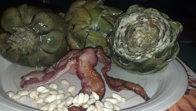

A.P.B. (Artichoke, Pine Nuts, Bacon

Ingredients
- Artichoke
- Better Than Bouillon stock base, flavor of choice
- Salt
- Bay Leaves
- Bacon
- Pine Nuts
Directions
- Bring a pot of water to boil
- Add Better Than Bouillon stock base, salt, and bay leaves.
- Add artichokes.
- Reduce heat to medium and simmer artichokes for 30 minutes or until tender.
- While artichokes are simmering, cook bacon in the oven at 400 degrees Fahrenheit for 20 minutes. Reserve the bacon fat.
- When artichokes are done, remove them from the pot and place them on a baking sheet.
- Pour reserved bacon fat over artichokes.
- Bake artichokes in oven at 350 degrees Fahrenheit for 30 minutes.
- At the same time, you can toast the pine nuts on a separate baking sheet
- Serve together on one plate.
Enjoy!